Il prezzo della tradizione
La vita di un agnello, dalla nascita alla tavola.
Ogni anno, in Italia, la carne di agnello entra nelle tradizioni gastronomiche di diverse regioni. A Natale, a Pasqua e in altre occasioni, diventa il centro di piatti considerati parte della cultura e della memoria familiare.
Prima di arrivare su una tavola, però, c'è un animale. Nasce, cresce, cerca la madre, si muove, esplora l'ambiente. Viene allevato, identificato, trasportato e, infine, macellato.
Per alcuni agnelli il percorso dalla nascita alla macellazione può durare appena quattro o cinque settimane. Per altri è più lungo: dipende dalla categoria commerciale e dal sistema di allevamento.
Questa pagina ricostruisce le principali tappe di quel percorso. Non racconta la storia di un singolo animale o di un allevamento specifico, ma una filiera che ogni anno trasforma vite individuali in prodotti alimentari.
Scorri di lato, usa le frecce della tastiera o i pulsanti ai lati. Oppure scegli la lettura verticale.
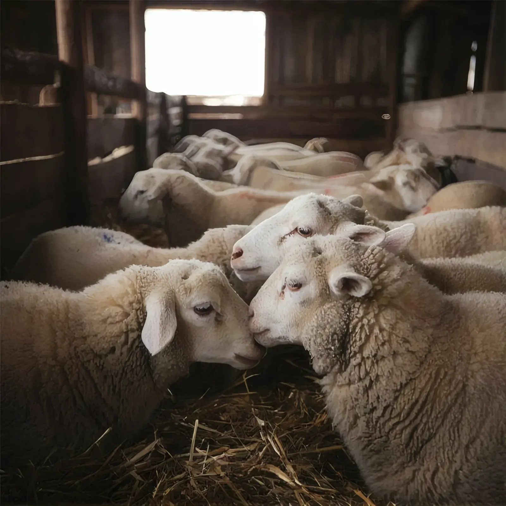
Nascere
La gestazione di una pecora dura in media circa cinque mesi.
Alla nascita, l'agnello è un animale vulnerabile. Deve asciugarsi, trovare la madre e iniziare a nutrirsi. Il primo latte, il colostro, gli fornisce anticorpi e sostanze indispensabili nelle prime ore di vita.
Nei giorni successivi si rafforza il legame con la madre. La riconosce, la cerca e dipende da lei per il nutrimento e la protezione.
Prima di diventare una categoria commerciale, è un individuo appena nato.
Informazione generaleFonti e approfondimenti
- Nessuna fonte specifica verificata in questa versione per le informazioni di questa scena.
Immagine illustrativa
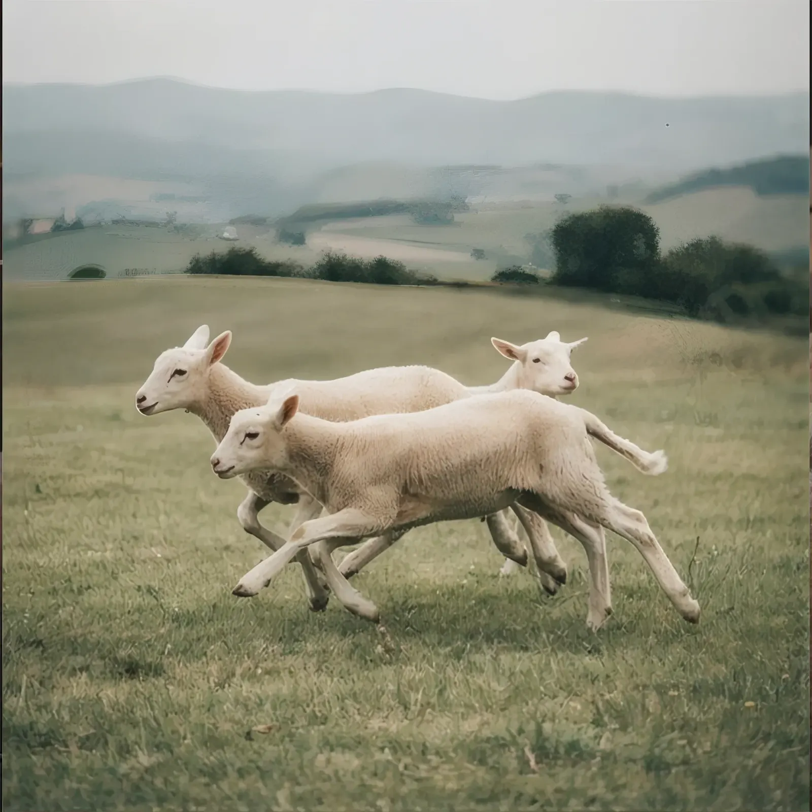
Crescere
Nelle prime settimane di vita l'agnello si nutre soprattutto di latte materno.
Segue la madre, la riconosce attraverso odori e richiami e interagisce con gli altri piccoli. Si alza, corre, salta, esplora lo spazio intorno a sé.
La crescita non è soltanto un aumento di peso. È un processo fatto di sviluppo fisico, apprendimento e comportamento.
La durata di questa fase dipende dal tipo di produzione a cui l'animale è destinato. Alcuni agnelli vengono macellati ancora molto giovani; altri continuano a crescere per mesi.
Informazione generaleFonti e approfondimenti
- Nessuna fonte specifica verificata in questa versione per le informazioni di questa scena.
- Per le età e le categorie: Valore Zer0: Vita media di un animale allevato.
Immagine illustrativa
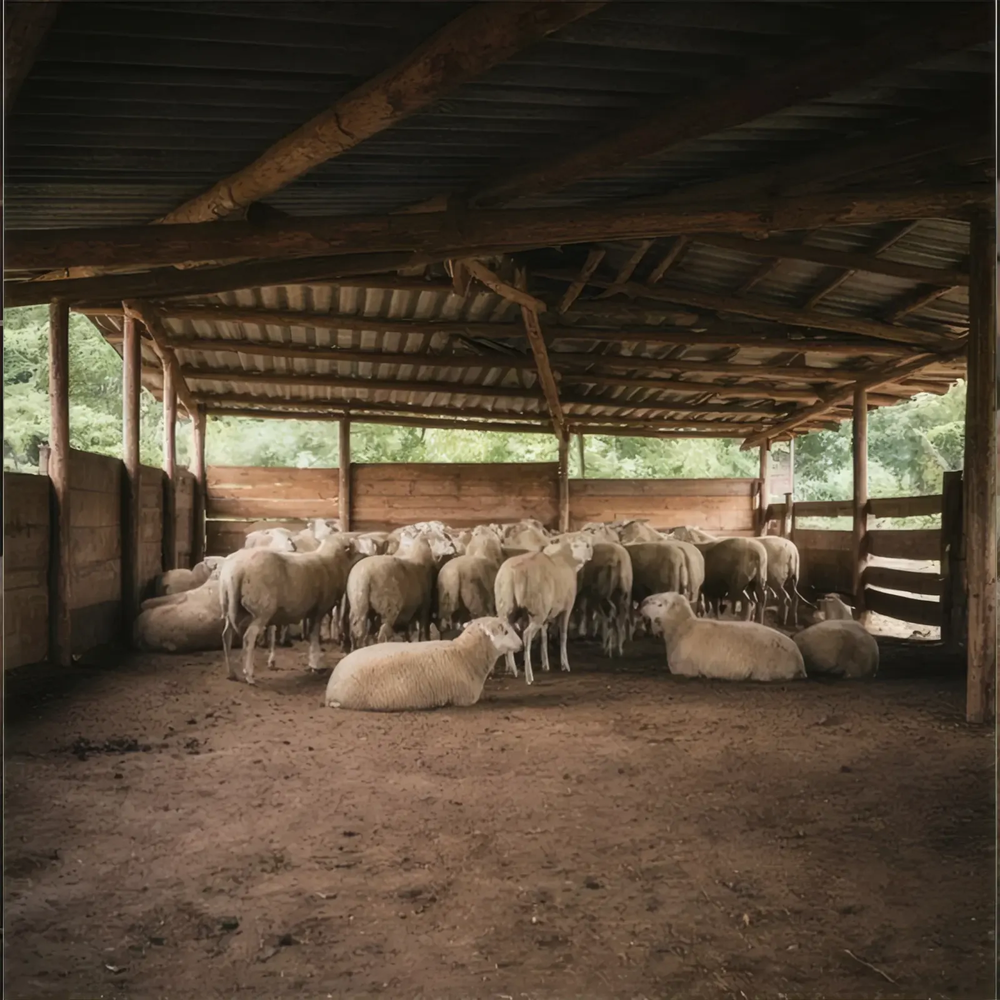
L'allevamento
Gli agnelli possono essere allevati al pascolo, in ricoveri o attraverso sistemi che alternano le due modalità.
Le condizioni cambiano da un allevamento all'altro: alimentazione, disponibilità di spazio, riparo, accesso all'acqua, gestione sanitaria e possibilità di movimento.
Anche la durata dell'allevamento varia. La categoria commerciale, il peso richiesto e le caratteristiche della produzione contribuiscono a determinare quando l'animale verrà avviato alla macellazione.
Non esiste un'unica esperienza di allevamento valida per tutti gli agnelli.
Il sistema produttivo determina tempi e condizioni della loro vita.
Informazione generaleFonti e approfondimenti
- Descrizione generale: le condizioni reali variano da azienda ad azienda e non sono ricostruite qui.
- Esempio di regole di una produzione a denominazione: ARSIAL, Lazio Patrimonio Agroalimentare: Abbacchio Romano IGP (alimentazione con latte materno; esclusi stress ambientale e nutrizionale, trattamenti ormonali).
Immagine illustrativa
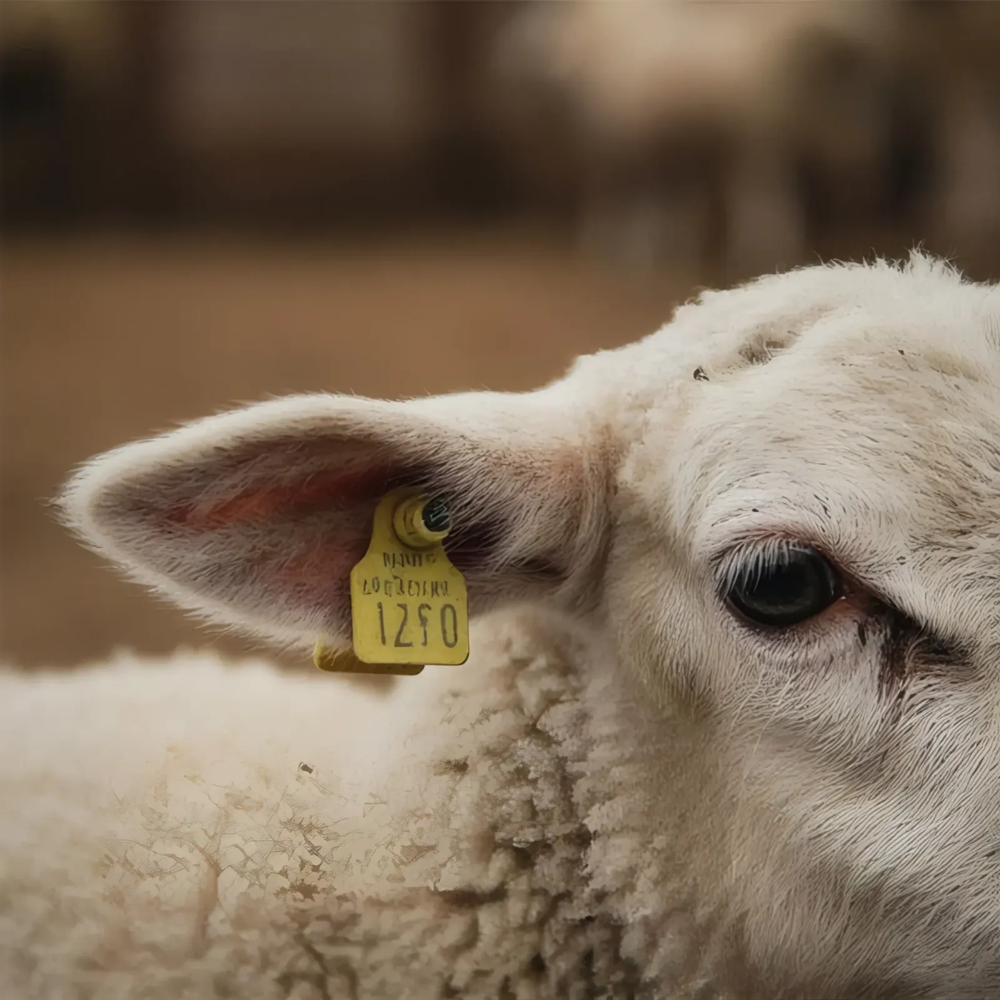
Identificazione
Gli ovini devono essere identificati secondo le norme di tracciabilità.
L'identificazione consente di associare l'animale alle informazioni previste dal sistema: provenienza, allevamento e movimenti lungo la filiera.
In alcune produzioni a denominazione IGP sono previsti requisiti specifici. Per esempio, i disciplinari dell'Abbacchio Romano IGP e dell'Agnello di Sardegna IGP stabiliscono modalità e tempi di identificazione.
Questa identificazione ufficiale non va confusa con le marcature colorate che possono essere applicate sul vello in allevamento.
Un codice permette di seguire l'animale nella filiera. Non racconta la sua esperienza.
Dato ufficialeFonti e approfondimenti
- Ministero della Salute, Banca dati delle anagrafi zootecniche.
- ARSIAL, Lazio Patrimonio Agroalimentare: Abbacchio Romano IGP; Disciplinare dell'Agnello di Sardegna IGP (copia su win.spaghettitaliani.com). Per queste due IGP l'identificazione avviene entro 20 giorni dalla nascita (per l'Abbacchio Romano con marca sull'orecchio sinistro). Non vale per tutti gli agnelli.
Immagine illustrativa
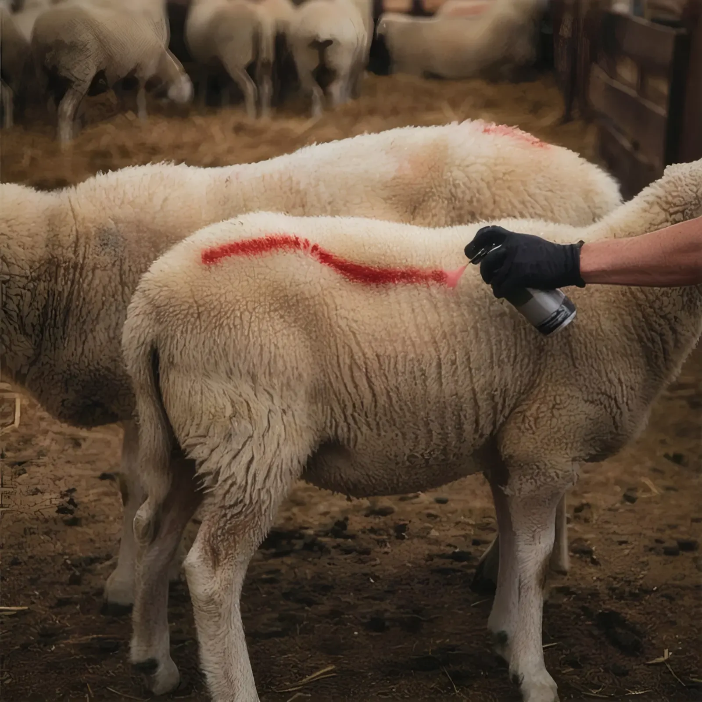
La marcatura
In alcuni allevamenti gli animali vengono contrassegnati con vernice colorata applicata sul vello, anche attraverso bombolette spray.
Il colore può servire a distinguere gruppi, lotti, categorie o destinazioni. In determinate realtà può indicare anche gli animali selezionati per la macellazione.
Non esiste un significato universale dei colori: il codice dipende dalle procedure adottate dall'azienda. Questa marcatura non sostituisce l'identificazione ufficiale prevista per la tracciabilità.
Per l'animale è un segno visibile sul corpo. Per l'organizzazione produttiva è un'informazione operativa.
Pratica documentataFonti e approfondimenti
- Pratica descritta come aziendale: nessuna fonte di carattere generale verificata in questa versione.
Immagine illustrativa
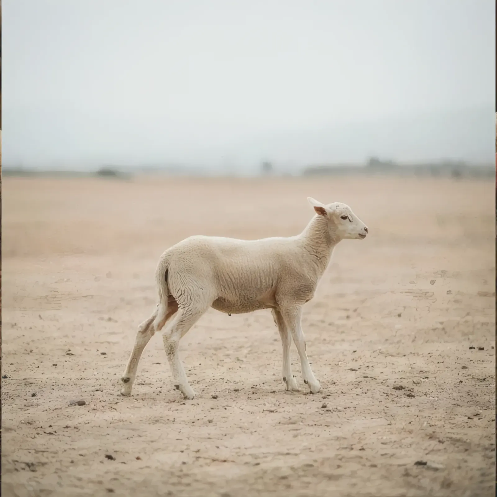
Quanto dura la loro vita?
28–40 giorni
Non tutti gli agnelli vengono macellati alla stessa età.
Un caso preciso è quello dell'Abbacchio Romano IGP: il relativo disciplinare prevede la macellazione dell'agnello da latte tra il ventottesimo e il quarantesimo giorno di vita, con un peso della carcassa fino a 8 kg.
Altre produzioni prevedono categorie e pesi differenti. Il disciplinare dell'Agnello di Sardegna IGP, per esempio, distingue agnelli da latte, leggeri e da taglio. L'Agnello del Centro Italia IGP comprende invece animali di età inferiore a dodici mesi.
Il dato di 28–40 giorni, quindi, non descrive tutti gli agnelli allevati in Italia. Descrive una specifica categoria commerciale.
Da quattro a quasi sei settimane possono bastare perché una vita diventi un prodotto.
Dato ufficialeFonti e approfondimenti
- ARSIAL, Lazio Patrimonio Agroalimentare: Abbacchio Romano IGP (pagina senza data di versione): 28–40 giorni, fino a 8 kg.
- Disciplinare dell'Agnello di Sardegna IGP (copia su win.spaghettitaliani.com): agnello «da latte» 4,5–8,5 kg, «leggero» 8,5–10 kg, «da taglio» 10–13 kg (carcassa). Il disciplinare non indica un'età in giorni.
- ARSIAL: Agnello del Centro Italia IGP: meno di 12 mesi; «leggero» 8,01–13 kg, «pesante» da 13,01 kg, castrato da 20 kg.
- Non si mostrano date di nascita o di macellazione di singoli animali, perché non esistono dati da riportare.
Immagine illustrativa
- 1
- 28
- 30
- 40
giorni 28, 30 e 40intervallo 28–40 giorni
Calendario del caso «Abbacchio Romano IGP». Non è il conto alla rovescia di un singolo animale.
| Abbacchio Romano IGP | 28–40 giorni; fino a 8 kg |
|---|---|
| Agnello di Sardegna IGP, «da latte» | solo latte materno; 4,5–8,5 kg |
| Agnello di Sardegna IGP, «leggero» e «da taglio» | 8,5–13 kg |
| Agnello del Centro Italia IGP | meno di 12 mesi; «leggero» 8,01–13 kg, «pesante» da 13,01 kg |
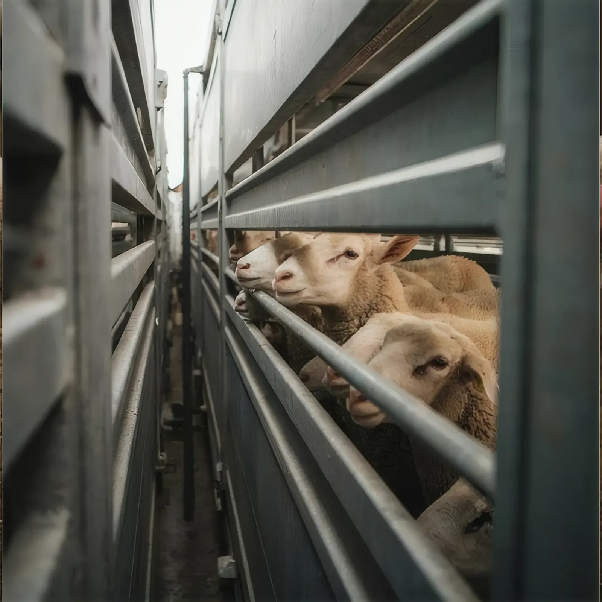
Il trasporto
Quando viene raggiunta la fase prevista dalla produzione, gli animali vengono caricati su mezzi autorizzati e trasferiti al macello.
Il viaggio comprende diverse fasi: movimentazione, carico, permanenza sul mezzo, trasporto e scarico.
Per gli animali significa lasciare l'ambiente conosciuto e affrontare una situazione nuova, con spostamenti, rumori, contatti e condizioni ambientali diverse.
La normativa europea stabilisce requisiti per il trasporto, tra cui quelli relativi all'idoneità degli animali, alla durata del viaggio, allo spazio disponibile e alle condizioni di trasporto.
Il trasferimento è una fase regolamentata della filiera. Non per questo è priva di stress.
Dato ufficialeFonti e approfondimenti
- EUR-Lex, sintesi: protezione degli animali durante il trasporto (Reg. CE 1/2005).
- I limiti numerici per gli ovini e per gli agnelli non svezzati sono nel testo del regolamento e non sono riportati qui, perché non verificati in questa versione.
- L'affermazione sullo stress da trasporto è una valutazione generale: non è stata verificata su una fonte specifica in questa versione.
Immagine illustrativa
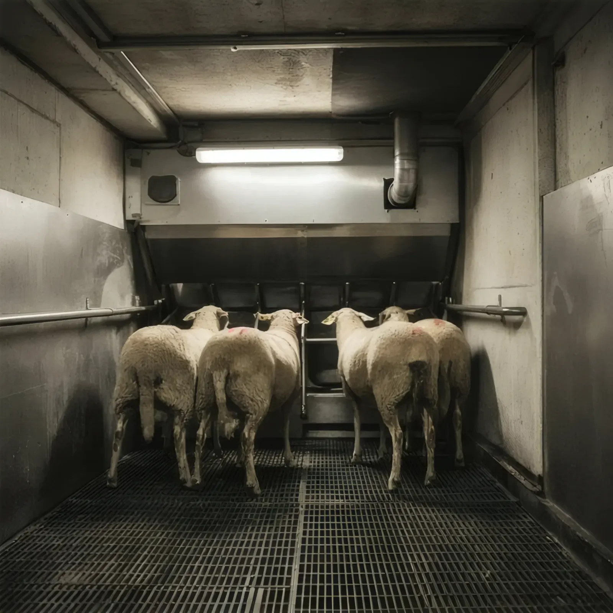
L'arrivo al macello
Al loro arrivo, gli animali vengono scaricati e condotti nelle aree previste per la permanenza prima della macellazione.
Seguono le operazioni di movimentazione, attesa e preparazione.
I tempi possono variare in funzione della filiera. Alcuni disciplinari IGP stabiliscono limiti specifici tra la consegna al macello e la macellazione: per esempio, entro 24 ore per l'Abbacchio Romano IGP e l'Agnello di Sardegna IGP.
Questi limiti riguardano le produzioni indicate e non devono essere generalizzati a tutti gli ovini.
La fase di allevamento è finita. Inizia quella che conduce all'uccisione.
Pratica documentataFonti e approfondimenti
Immagine illustrativa
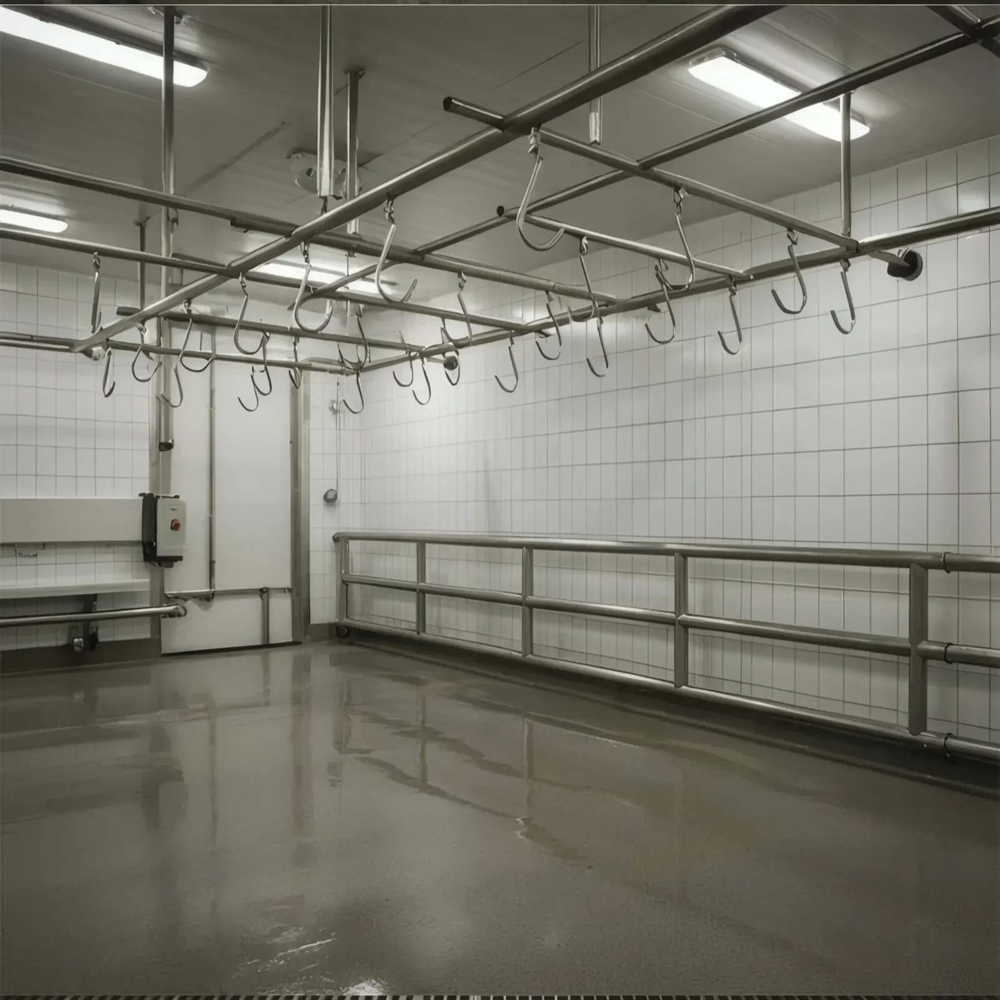
L'uccisione
Nella procedura ordinaria, la normativa europea prevede lo stordimento dell'animale prima dell'uccisione.
Per gli ovini sono previsti diversi metodi di stordimento, tra cui quelli meccanici ed elettrici.
Dopo lo stordimento viene eseguito il dissanguamento, attraverso il taglio dei principali vasi sanguigni del collo. Seguono i controlli previsti per verificare l'efficacia dello stordimento e l'avvenuto decesso.
La normativa contempla anche deroghe per la macellazione rituale, che in determinate condizioni può avvenire senza stordimento preventivo. Le procedure, le condizioni e le differenze normative sono approfondite nelle pagine dedicate di Valore Zer0.
L'animale muore. La filiera prosegue.
Dato ufficialeFonti e approfondimenti
- Reg. CE 1099/2009, protezione degli animali durante l'abbattimento (testo originale). L'allegato I elenca i metodi di stordimento, tra cui quello meccanico con pistola a proiettile captivo non penetrante e quello elettrico testa-corpo.
- Valore Zer0: Processi di macellazione; Valore Zer0: Macellazione rituale.
Immagine illustrativa
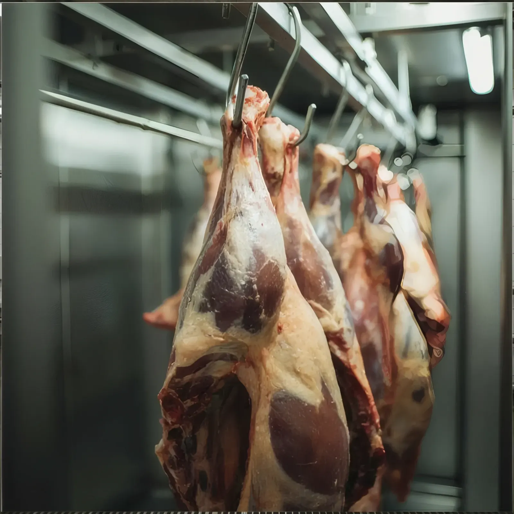
Da animale a carne
Dopo l'uccisione, il corpo dell'animale viene sottoposto alle operazioni di lavorazione previste dalla macellazione.
La carcassa viene scuoiata ed eviscerata, sottoposta ai controlli sanitari e refrigerata. Successivamente viene sezionata in tagli destinati alla distribuzione e alla vendita.
A questo punto il percorso produttivo ha completato la trasformazione: ciò che era un animale vivo è diventato una carcassa e, poi, una serie di prodotti alimentari.
La filiera separa le fasi, assegna loro procedure e funzioni. Ma il prodotto finale proviene sempre dallo stesso individuo.
Informazione generaleFonti e approfondimenti
- Descrizione generale delle fasi. Per le tecniche di lavorazione negli ovini: Valore Zer0: Processi di macellazione.
Immagine illustrativa
- 1Nascita
- 2Allevamento
- 3Identificazione
- 4Trasporto
- 5Macello
- 6Lavorazione
- 7Distribuzione
- 8Consumo
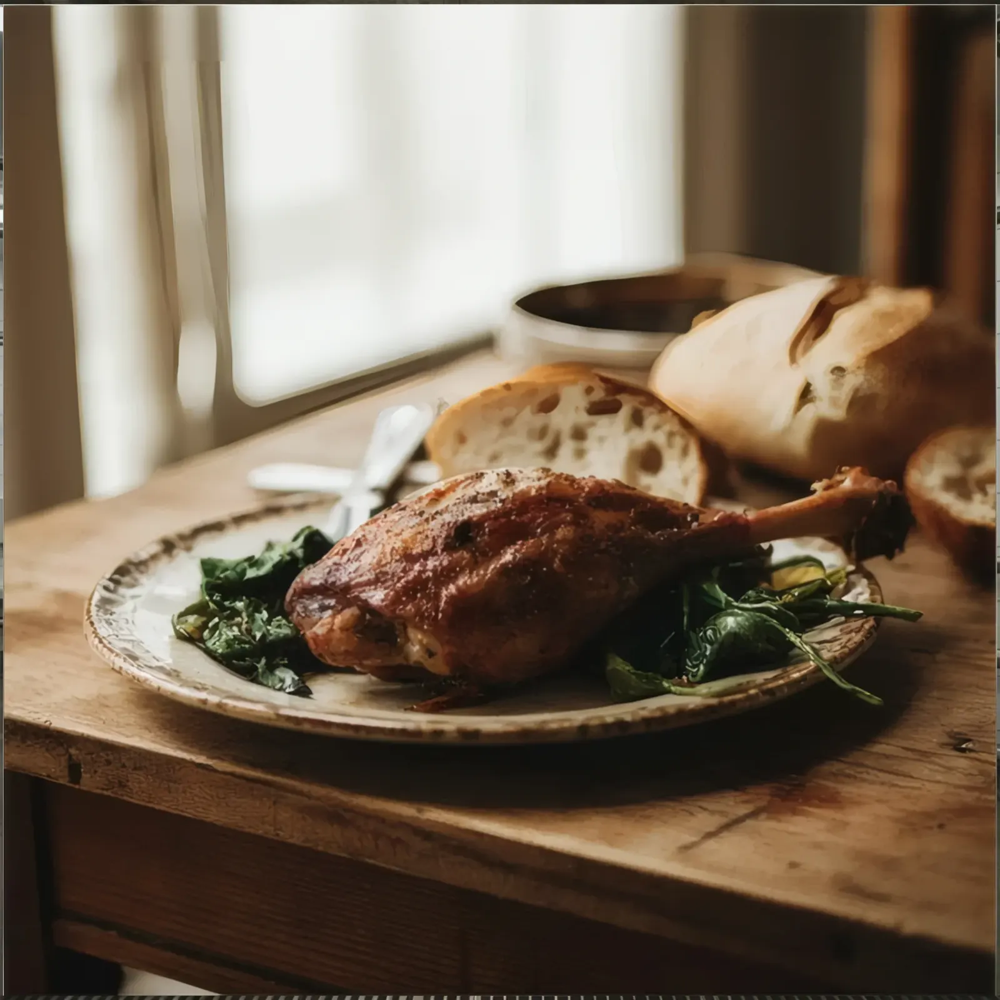
La carne sulla tavola
La carne ovina viene distribuita attraverso macellerie, supermercati, ristoranti e altri canali commerciali.
In Italia è utilizzata in preparazioni legate a tradizioni regionali differenti:
- Abbacchio al forno e a scottadito (Lazio)
- Agnello cacio e uova (Abruzzo e Molise)
- Agnello arrosto (Sardegna)
- Costolette e altre preparazioni a base di agnello
- Arrosticini (tradizione abruzzese)
Una distinzione è importante: gli arrosticini tradizionali sono generalmente preparati con carne di ovino adulto, non con quella dell'agnello da latte. Non tutte queste preparazioni, quindi, provengono dalla stessa categoria di animale.
Il consumo di carne ovina è legato a ricorrenze, abitudini e identità gastronomiche. La tradizione riguarda il piatto e il suo significato culturale.
Per arrivare nel piatto, la vita dell'animale è già terminata.
Informazione generaleFonti e approfondimenti
- Il dato sugli agnelli macellati è quello della scheda ISTAT del sito: Valore Zer0: scheda Agnelli (ISTAT). Non è attribuibile alle sole festività.
- Preparazioni e arrosticini: informazione generale, fonte non ancora verificata in questa versione.
Immagine illustrativa
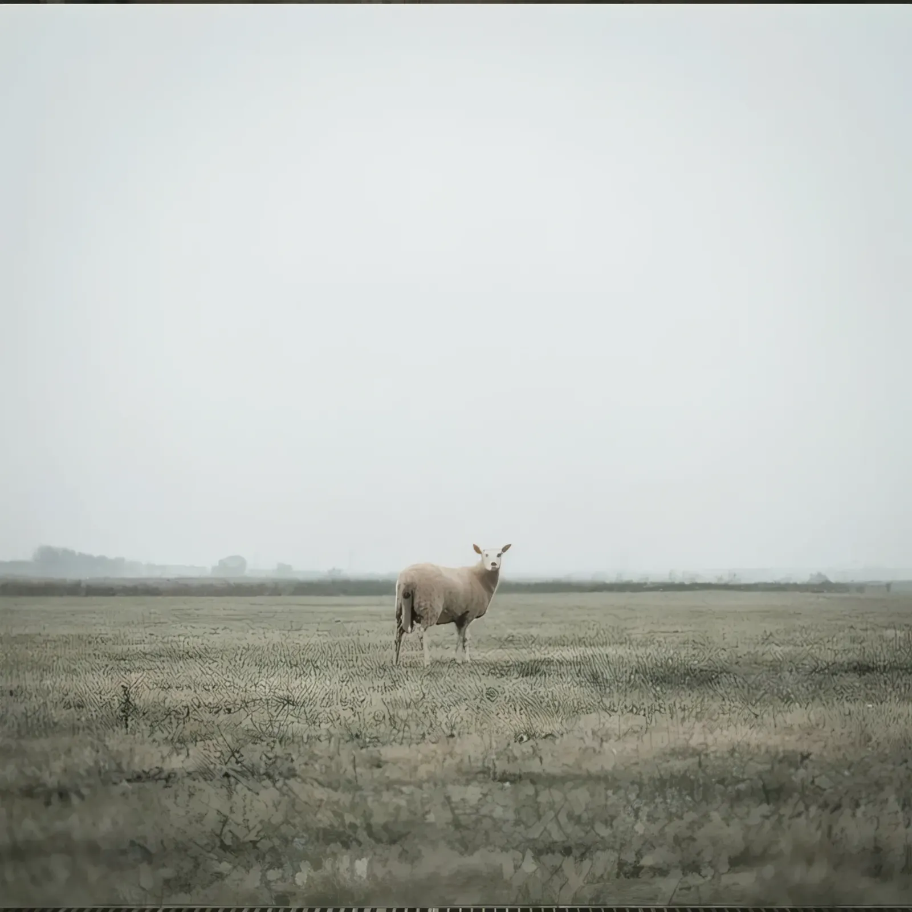
Il prezzo della tradizione
La tradizione dura un giorno.
La vita dell'agnello può durare poche settimane.
Per diventare un piatto delle festività, un animale nasce, cresce, viene allevato, identificato, trasportato e ucciso.
La carne è il prodotto finale di questo percorso. Prima del prodotto c'è stata una vita: un corpo che cresceva, una madre che lo nutriva, un animale che cercava spazio, contatto e protezione.
Il calendario delle festività stabilisce quando quel piatto viene consumato. Il ciclo produttivo stabilisce quando l'animale smette di vivere.
Dietro ogni piatto c'è una vita. Dietro ogni numero, individui: oltre un milione e trecentomila agnelli macellati in Italia in 12 mesi (ISTAT, ago 2025–lug 2026).
Informazione generaleFonti e approfondimenti
- La frase sintetizza le scene precedenti. «Poche settimane» riguarda le categorie con macellazione a 28–40 giorni, non tutti gli agnelli.
- Contatore: ISTAT, agnelli macellati da agosto 2025 a luglio 2026, media su 365 giorni. Il dato non distingue il periodo natalizio. Valore Zer0: scheda Agnelli (ISTAT).
 Torna alla home di Valore Zer0
Torna alla home di Valore Zer0
Immagine illustrativa
Da quando hai aperto questa pagina:
0
agnelli macellati in Italia, in media
Stima calcolata sui dati statistici disponibili: 1 agnello ogni 22,7 secondi, 159 all'ora, 3805 al giorno (1.389.005 in 12 mesi, ago 2025–lug 2026). Non è un conteggio in tempo reale e non distingue le macellazioni legate al Natale.